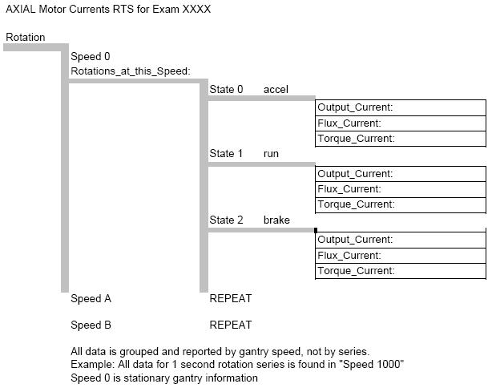

Operating Documentation
Direction 5181178-800, Rev# 16
BrightSpeed Select Service Methods Gen
Module Version 1.0, Version Date 2/16/07
Operating Documentation |
This document defines the available Real Time Statistics (RTS) data available on the system for the Axial Drive subsystem. The RTS data is sent by the TGP to the host at the end of each exam.
The RTS viewer for the Axial Motor Current Stats shows a listing of information related to the Axial Drive. See Illustration 1 for a pictorial view of the data to help in understanding the information seen. The information is grouped by rotation speed for the exam into 3 drive states for the listed rotation speed. Data is not organized by series.
Illustration 1: Axial motor currents pictorial view

Table 1: Example data
| RTS (Real Time Statistics) Name | Example data | Unit | Range | Explanation |
| ENDEXAM: ID 801 | Exam indicator for this data set | |||
| Rotation:: | ||||
| Speed: | 1000 | msec per roation | Rotation speed for this set of data from the stated exam. | |
| Rotations_at_this_Speed: | 33 | count | number of rotations at this speed. | |
| State_Group:: | ||||
| State: | 0 | flag | Flag indicating drive state; 0 = Accelerate; 1 = run; 2 = Braking | |
| Output_Current: | 14.99775 | Amps | drive current | |
| Flux_Current: | 7.49525 | Amps | ||
| Torque_Current: | 12.787 | Amps | ||
| State_Group:: | ||||
| State: | 1 | flag | Flag indicating drive state; 0 = Accelerate; 1 = run; 2 = Braking | |
| Output_Current: | 3.593 | Amps | ||
| Flux_Current: | 3.38 | Amps | ||
| Torque_Current: | 1.159 | Amps | ||
| State_Group:: | ||||
| State: | 2 | flag | Flag indicating drive state; 0 = Accelerate; 1 = run; 2 = Braking | |
| Output_Current: | NaN | Amps | NaN indicates no data | |
| Flux_Current: | NaN | Amps | ||
| Torque_Current: | NaN | Amps |